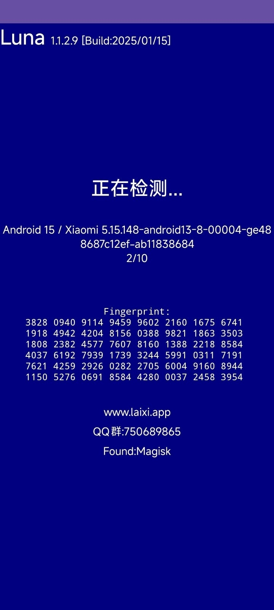

Luna 验机工具到底值不值得掏钱？一笔账算清楚
从免费版能做什么、付费版多了什么，到不同使用强度的时间成本拆解，帮你三分钟决定 Luna 要不要付费。
它到底值不值得掏钱？
这是我第一次打开 Luna 检测工具时脑子里蹦出来的第一个念头。作为一个最近频繁在二手平台帮朋友收手机的人，我前后对比过四五款同类验机工具——有免费开源的，有平台自带的，也有Luna官网上介绍的 Luna 这种独立开发者做的——最终留下来的只有它。
但"留下来"和"掏不掏钱"是两回事。让我把这笔账掰开算。
定价拆解：免费版给你什么，付费版多什么
Luna 的门槛极低：从官方下载拿安装包，普通权限即装即用，免账号，装完点开就能跑检测，整个流程从启动到出结果通常在十秒以内。这一点在同类型工具里属于第一梯队——很多竞品要么要求 Root，要么要注册登录，要么检测完之后核心功能藏起来让你付完才看得见。
免费版覆盖了日常验机的全部核心场景：硬件参数读取（CPU、存储、屏幕、电池健康度）、系统状态核对（Root、Bootloader 解锁、Magisk 检出）、虚拟环境识别（模拟器和云手机都能扫出来）、安全威胁扫描。这些东西加起来就是你在二手市场蹲点、收手机时需要的全套基本功。

那付费版多了什么？从功能边界来看，它在免费版的基础上堆了三层东西：一是批量检测能力——如果你同时管十几台甚至几十台设备，免费版需要一台一台跑，付费版可以批量出结果报表；二是深度扫描项——比如更细粒度的传感器校准数据、屏幕触控采样率衰减检测，这些指标免费版不显示或只给模糊结论；三是结果导出和历史存档——免费版看完即走，付费版可以把每次检测结果导出来留档，对企业设备管理或个人长期跟踪某台机器的使用情况有用。
价格档位方面，它走的是独立开发者常用的订阅制 + 买断双轨：月付大约一杯咖啡钱，年付相当于两个月白送，终身买断价格稍高但一次到位。没有隐藏的内购项，也没有"高级功能解锁"的弹窗骚扰——这点值得加分。
算账：三类人，各自的账怎么算
轻度用户：免费版完全够用，一分钱别花
什么是轻度用户？半年才买一台二手手机、偶尔帮朋友验个机、自己的设备一年查个一两次。这种场景下免费版的覆盖度已经超过 90%——硬件参数、Root 状态、虚拟环境识别，该有的都有，检测速度也快，打开就能用。
如果你属于这一档，付费版里的批量检测、深度扫描、历史存档对你来说全是摆设。花的那笔钱本质上是为你用不到的功能买单。省下来比什么都实在。
唯一的例外：你对电池健康度或屏幕衰减这类细粒度指标有执念，而免费版给的是笼统说法。这种情况可以先免费跑一次，看看结果能不能让你心里踏实——踏实就不付，不踏实再考虑。
主力用户：性价比很高，值得付
什么是主力用户？三个月内帮人验了七八台机器、自己经营个小的二手转卖业务、或者你是游戏工作室/电商团队需要定期检测手上的设备状态。这种场景下 Luna 的核心价值开始体现。
先用免费版的时间成本算一笔账：每验一台手机，你需要手动启动、等检测、截图保存关键参数、对照卖家说辞一项项核对——整个流程少说三五分钟，还容易漏项。付费版的批量检测和结果导出能把这个时间压缩到每台三十秒以内，而且结果是结构化的，不会漏。假设你每月验五十台机器，付费版省下来的时间大概是八到十个小时——按一个普通工时算，这笔订阅费两三个月就赚回来了。
再看深度扫描项。主力用户最怕的就是翻新机和拆装机混过关，免费版能识别明显痕迹，但屏幕触控采样率衰减、传感器校准偏移这些隐性老化信号，只有付费版能给出数字。具体怎么解读这些数字，可以去Luna文档翻一翻。这些指标不直接标红，但能帮你判断"九成新"到底是真的还是卖家贴的标签。

这一档用户我直接建议年付，性价比最高，一年下来也就是一顿好点的饭钱。
重度用户：批量设备管控必须上
什么是重度用户？企业设备管理员、云手机服务商、需要同时管理上百台设备的团队。这种场景下免费版根本不够用，不是功能差，是效率差。
举个例子：一家中等规模的云手机服务商，手上同时跑着两百台安卓实例，每台每周都要检测一次环境真实度。用免费版，你需要一台一台远程操作、记录结果、汇总分析——这基本相当于一个全职员工的工作量。付费版的批量接口和结果报表可以直接把检测流程嵌入到设备管理系统里，自动跑完、自动汇总、自动标记异常，人力成本可能降一个数量级。
这一档用户的账不是"值不值"的问题，是"不付会不会拖业务后腿"的问题。答案很明确：会。
替代方案：不付这笔钱，还有什么路
不是所有用户都要上 Luna。下面几条路，每条都对应一种特定场景。
用免费开源的验机工具。市面上有几款完全免费的开源验机应用，核心检测能力和 Luna 免费版差不多，甚至某些单项检测更细。缺点是界面比较粗糙、没有中文文档（或者文档质量一般）、维护活跃度不稳定——有的停更了，有的偶尔抽风。如果你能接受这些，完全可以用，不用花钱。
用平台自带的验机服务。闲鱼、转转这类二手平台自带验机功能，通常由第三方实验室完成，价格包含在平台服务费里。优点是报告权威性高，交易纠纷时可以当证据；缺点是慢——通常要寄过去三四天才能出结果，而且只能验机，不能做日常的设备状态跟踪。适合单次大额交易，不适合高频验机。
降低使用频率。如果你既不想付钱又不想换工具，还有一种路：把验机频率降下来——比如从每台必验改成只验价格超过某个阈值的机器，或者只在交易现场验一次而不是自己买之前也验。代价就是可能漏掉一些细节，但能省掉付费开支。
结论：哪类人闭眼付，哪类人再等等，哪类人永远不用付
最后给一个可执行的对照表：
闭眼付：你每月验机超过二十台，或者你需要管理五台以上的设备。付费版省下来的时间很快就能回本，深度扫描项帮你少踩的坑可能比订阅费贵得多。直接年付，别纠结。
再等等：你验机频率不高但对某个深度扫描项有刚需。先免费跑几次，看看结果能不能满足你。如果每次都觉得"要是能看到那个数字就好了"，那时候再付也不迟。或者等它出限时活动的时候再入。
永远不用付：你半年验不到一台，或者你有其他完全免费的替代方案能满足需求。Luna 免费版覆盖了验机的基本功，花这笔钱对你来说没有任何收益——不如把钱省下来换个手机壳。
说了这么多，我自己的选择是年付。因为我这半年帮朋友验了十二台手机，其中有三台靠 Luna 的检测结果当场识破了卖家的虚标——光是这三次省下来的钱，订阅费早就回本了。整理下来的验机笔记我也同步到了GitHub、Gitee 和 GitCode，方便后来人对照自己的验机结果。但如果你问我"所有人都该付吗"，答案是不。工具是服务于场景的，不是反过来。